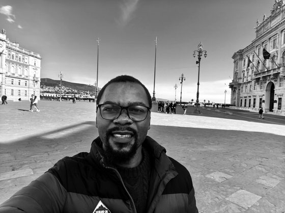

Hi, and thank you for stopping by. I am Emmanuel. I trained as a mathematician, and now I work where machine learning meets data management.
I started with a Bachelor's in Mathematics in the Democratic Republic of Congo, then worked as a maths tutor for two years. After that, I earned a Master's in Artificial Intelligence for Science at AIMS South Africa and Stellenbosch University, fully funded by Google DeepMind. I am now completing a Professional Master's in Data Management and Curation at SISSA in Trieste, funded by Area Science Park and SISSA.
I like to use this mixed background on projects that sit between Machine Learning and Data Management. I care about building tools that are reproducible, open (FAIR), and useful to the people who use them, especially in science and public health.
I am now looking for a PhD in these areas.
I am currently building small things at the intersection of Machine Learning and Data Management. Hopefully, it often works, and sometimes it fails :-)